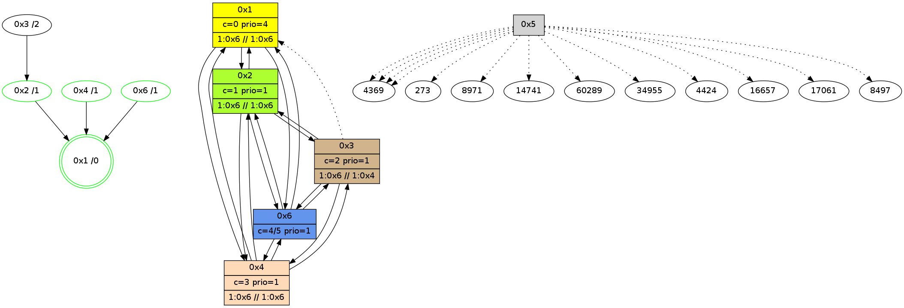

>> << IDX [start] -100 -25 -5 +0 +5 +25 +100 [820.001842976]
 Previous packets
----------------------------------------------------------------------
815.080756 beacon01(adaf) #0 coord=01,02,05,03,04,06 cycle=432.0ms assoc
-- color-indic=1 64 db 4b
815.090717 beacon02(adaf) #0 coord=01,02,05,03,04,06 cycle=432.0ms assoc 64 8a b4
815.100717 beacon05(adaf) #0 coord=01,02,05,03,04,06 cycle=432.0ms assoc 64 2c 9e
815.110718 beacon03(adaf) #0 coord=01,02,05,03,04,06 cycle=432.0ms assoc 64 b0 ba
815.120717 beacon04(adaf) #0 coord=01,02,05,03,04,06 cycle=432.0ms assoc 64 16 90
815.130718 beacon06(adaf) #0 coord=01,02,05,03,04,06 cycle=432.0ms assoc 64 62 8c
815.147155 [Hello(1): seq=518 sym=2,4,6 sysInfo=hasWarning,coloring-mode-on,ColoringModeRequestCalled stat=2:0,1,0,0/4:10,7,9,1/6:10,7,8,0]
815.149529 [Hello(4): seq=619 sym=2,6,1,3 sysInfo=hasWarning,coloring-mode-on,ColoringModeIndicationCalled stat=2:13,2,4,1/6:1,2,1,0/1:5,11,10,1/3:11,3,3,2]
815.152656 [Color(4) seq=45 @0:0 color=3 prio=1 >1.@6 >>1.@6 c=0,1;2]
----------------------------------------------------------------------
815.572868 beacon01(adaf) #0 coord=01,02,05,03,04,06 cycle=432.0ms assoc
-- color-indic=1 64 1f 24
815.582829 beacon02(adaf) #0 coord=01,02,05,03,04,06 cycle=432.0ms assoc 64 4e db
815.592830 beacon05(adaf) #0 coord=01,02,05,03,04,06 cycle=432.0ms assoc 64 e8 f1
815.602829 beacon03(adaf) #0 coord=01,02,05,03,04,06 cycle=432.0ms assoc 64 74 d5
815.612831 beacon04(adaf) #0 coord=01,02,05,03,04,06 cycle=432.0ms assoc 64 d2 ff
815.622830 beacon06(adaf) #0 coord=01,02,05,03,04,06 cycle=432.0ms assoc 64 a6 e3
815.635170 [Color(6) seq=45 @0:0 prio=1 >>1.@4,1.@6 c=0,1,2]
815.637178 [Hello(2): seq=1109 sym=6,4,1,3 sysInfo=coloring-mode-on,ColoringModeIndicationCalled stat=6:12,3,8,3/4:15,2,5,1/1:5,11,9,1/3:4,2,3,0]
815.640312 [Color(2) seq=45 @0:0 color=1 prio=1 >1.@6 >>1.@6 c=0,2,3]
815.644332 [Color(3) seq=30 @0:0 color=2 prio=1 >1.@6 >>1.@4,1.@6 c=0,1,3]
815.646740 [Color(1) seq=46 @0:0 color=0 prio=4 >1.@6 >>1.@4,1.@6 c=1,2]
----------------------------------------------------------------------
816.064975 beacon01(adaf) #0 coord=01,02,05,03,04,06 cycle=432.0ms assoc
-- color-indic=1 64 53 94
816.074935 beacon02(adaf) #0 coord=01,02,05,03,04,06 cycle=432.0ms assoc 64 02 6b
816.084936 beacon05(adaf) #0 coord=01,02,05,03,04,06 cycle=432.0ms assoc 64 a4 41
816.094936 beacon03(adaf) #0 coord=01,02,05,03,04,06 cycle=432.0ms assoc 64 38 65
816.104937 beacon04(adaf) #0 coord=01,02,05,03,04,06 cycle=432.0ms assoc 64 9e 4f
816.114937 beacon06(adaf) #0 coord=01,02,05,03,04,06 cycle=432.0ms assoc 64 ea 53
816.126089 [Hello(1): seq=519 sym=2,4,6 sysInfo=hasWarning,coloring-mode-on,ColoringModeRequestCalled stat=2:0,1,0,0/4:11,8,9,1/6:10,7,8,0]
816.128633 [Hello(4): seq=620 sym=2,6,1,3 sysInfo=hasWarning,coloring-mode-on,ColoringModeIndicationCalled stat=2:14,3,4,1/6:1,2,1,0/1:5,12,10,1/3:11,4,3,2]
816.130843 [STC(1) #0.72 new-neigh,tree-change,inconsistent-stability,stable,to-color d=0]
816.132129 [Hello(3): seq=618 sym=2,4,6 asym=1 sysInfo=hasWarning stat=2:11,1,4,1/4:12,1,3,1/6:1,9,14,10/1:2,13,5,1]
816.137178 [Color(4) seq=46 @0:0 color=3 prio=1 >1.@6 >>1.@6 c=0,1;2]
----------------------------------------------------------------------
816.557083 beacon01(adaf) #0 coord=01,02,05,03,04,06 cycle=432.0ms assoc
-- color-indic=1 64 97 fb
816.567044 beacon02(adaf) #0 coord=01,02,05,03,04,06 cycle=432.0ms assoc 64 c6 04
816.577044 beacon05(adaf) #0 coord=01,02,05,03,04,06 cycle=432.0ms assoc 64 60 2e
816.587044 beacon03(adaf) #0 coord=01,02,05,03,04,06 cycle=432.0ms assoc 64 fc 0a
816.597045 beacon04(adaf) #0 coord=01,02,05,03,04,06 cycle=432.0ms assoc 64 5a 20
816.607045 beacon06(adaf) #0 coord=01,02,05,03,04,06 cycle=432.0ms assoc 64 2e 3c
816.618778 [Hello(5): seq=577 asym=4369,273,8971,14741,60289,34955,4424,16657,17061,4369,4369,4369,8497]
816.621388 [Hello(2): seq=1110 sym=6,4,1,3 sysInfo=coloring-mode-on,ColoringModeIndicationCalled stat=6:13,3,8,3/4:0,3,5,1/1:6,12,10,1/3:4,3,3,0]
816.624521 [STC(2)->1 #0.72 new-neigh,tree-change,inconsistent-stability,stable,to-color d=1]
816.627770 [Color(2) seq=46 @0:0 color=1 prio=1 >1.@6 >>1.@6 c=0,2,3]
816.630024 [Color(1) seq=47 @0:0 color=0 prio=4 >1.@6 >>1.@4,1.@6 c=1,2]
----------------------------------------------------------------------
817.049191 beacon01(adaf) #0 coord=01,02,05,03,04,06 cycle=432.0ms assoc
-- color-indic=1 64 c9 9a
817.059152 beacon02(adaf) #0 coord=01,02,05,03,04,06 cycle=432.0ms assoc 64 98 65
817.069153 beacon05(adaf) #0 coord=01,02,05,03,04,06 cycle=432.0ms assoc 64 3e 4f
817.079153 beacon03(adaf) #0 coord=01,02,05,03,04,06 cycle=432.0ms assoc 64 a2 6b
817.089153 beacon04(adaf) #0 coord=01,02,05,03,04,06 cycle=432.0ms assoc 64 04 41
817.099153 beacon06(adaf) #0 coord=01,02,05,03,04,06 cycle=432.0ms assoc 64 70 5d
817.110944 [Hello(1): seq=520 sym=2,4,6 sysInfo=hasWarning,coloring-mode-on,ColoringModeRequestCalled stat=2:0,1,0,0/4:11,9,9,1/6:11,7,8,0]
817.113591 [Hello(4): seq=621 sym=2,6,1,3 sysInfo=hasWarning,coloring-mode-on,ColoringModeIndicationCalled stat=2:15,4,5,1/6:1,2,1,0/1:6,13,10,1/3:11,4,3,2]
817.116503 [Hello(3): seq=619 sym=2,4,6 asym=1 sysInfo=hasWarning stat=2:11,2,5,1/4:12,2,3,1/6:1,10,14,10/1:2,14,5,1]
817.118481 [Color(4) seq=47 @0:0 color=3 prio=1 >1.@6 >>1.@6 c=0,1;2]
817.120493 [STC(3)->2-.->1 #0.72 to-color d=2]
----------------------------------------------------------------------
817.541302 beacon01(adaf) #0 coord=01,02,05,03,04,06 cycle=432.0ms assoc
-- color-indic=1 64 0d f5
817.551262 beacon02(adaf) #0 coord=01,02,05,03,04,06 cycle=432.0ms assoc 64 5c 0a
817.561263 beacon05(adaf) #0 coord=01,02,05,03,04,06 cycle=432.0ms assoc 64 fa 20
817.571262 beacon03(adaf) #0 coord=01,02,05,03,04,06 cycle=432.0ms assoc 64 66 04
817.581263 beacon04(adaf) #0 coord=01,02,05,03,04,06 cycle=432.0ms assoc 64 c0 2e
817.591263 beacon06(adaf) #0 coord=01,02,05,03,04,06 cycle=432.0ms assoc 64 b4 32
817.603454 [Color(6) seq=47 @0:0 color=4/5 prio=1 c=0,1,2;3]
817.604972 [Color(1) seq=48 @0:0 color=0 prio=4 >1.@6 >>1.@4,1.@6 c=1,2]
817.609269 [Hello(2): seq=1111 sym=6,4,1,3 sysInfo=coloring-mode-on,ColoringModeIndicationCalled stat=6:14,3,8,3/4:1,4,5,1/1:6,13,10,1/3:5,3,4,0]
817.613033 [TreeStatus(2)-.->1 #0.72 new-neigh,tree-change,inconsistent-stability,stable child=1]
817.615503 [Color(2) seq=47 @0:0 color=1 prio=1 >1.@6 >>1.@6 c=0,2,3]
----------------------------------------------------------------------
818.033409 beacon01(adaf) #0 coord=01,02,05,03,04,06 cycle=432.0ms assoc
-- color-indic=1 64 41 45
818.043370 beacon02(adaf) #0 coord=01,02,05,03,04,06 cycle=432.0ms assoc 64 10 ba
818.053369 beacon05(adaf) #0 coord=01,02,05,03,04,06 cycle=432.0ms assoc 64 b6 90
818.063371 beacon03(adaf) #0 coord=01,02,05,03,04,06 cycle=432.0ms assoc 64 2a b4
818.073370 beacon04(adaf) #0 coord=01,02,05,03,04,06 cycle=432.0ms assoc 64 8c 9e
818.083371 beacon06(adaf) #0 coord=01,02,05,03,04,06 cycle=432.0ms assoc 64 f8 82
818.095089 [Hello(3): seq=620 sym=2,4,6 asym=1 sysInfo=hasWarning stat=2:12,3,5,2/4:12,2,3,1/6:1,10,14,10/1:2,15,5,1]
818.097829 [Hello(4): seq=622 sym=2,6,1,3 sysInfo=hasWarning,coloring-mode-on,ColoringModeIndicationCalled stat=2:0,5,5,2/6:2,2,1,0/1:6,14,10,1/3:11,4,4,2]
818.100523 [Hello(6): seq=535 sym=3,4,1,2 sysInfo=hasWarning,coloring-mode-on,ColoringModeIndicationCalled stat=3:1,3,2,0/4:11,2,5,1/1:9,7,10,1/2:0,7,10,5]
818.102703 [Color(4) seq=48 @0:0 color=3 prio=1 >1.@6 >>1.@6 c=0,1;2]
----------------------------------------------------------------------
818.525519 beacon01(adaf) #0 coord=01,02,05,03,04,06 cycle=432.0ms assoc
-- color-indic=1 64 85 2a
818.535479 beacon02(adaf) #0 coord=01,02,05,03,04,06 cycle=432.0ms assoc 64 d4 d5
818.545480 beacon05(adaf) #0 coord=01,02,05,03,04,06 cycle=432.0ms assoc 64 72 ff
818.555480 beacon03(adaf) #0 coord=01,02,05,03,04,06 cycle=432.0ms assoc 64 ee db
818.565481 beacon04(adaf) #0 coord=01,02,05,03,04,06 cycle=432.0ms assoc 64 48 f1
818.575480 beacon06(adaf) #0 coord=01,02,05,03,04,06 cycle=432.0ms assoc 64 3c ed
818.587657 [Color(6) seq=48 @0:0 color=4/5 prio=1 c=0,1,2;3]
818.589850 [Hello(2): seq=1112 sym=6,4,1,3 sysInfo=coloring-mode-on,ColoringModeIndicationCalled stat=6:15,3,8,3/4:2,5,5,1/1:6,13,10,1/3:6,3,4,0]
818.592877 [STC(1) #0.73 new-neigh,tree-change,inconsistent-stability,stable,to-color d=0]
818.594718 [Color(2) seq=48 @0:0 color=1 prio=1 >1.@6 >>1.@6 c=0,2,3]
818.599779 [Color(1) seq=49 @0:0 color=0 prio=4 >1.@6 >>1.@6 c=1,2;3]
----------------------------------------------------------------------
819.017626 beacon01(adaf) #0 coord=01,02,05,03,04,06 cycle=432.0ms assoc
-- color-indic=1 64 c8 2d
819.027587 beacon02(adaf) #0 coord=01,02,05,03,04,06 cycle=432.0ms assoc 64 99 d2
819.037587 beacon05(adaf) #0 coord=01,02,05,03,04,06 cycle=432.0ms assoc 64 3f f8
819.047587 beacon03(adaf) #0 coord=01,02,05,03,04,06 cycle=432.0ms assoc 64 a3 dc
819.057588 beacon04(adaf) #0 coord=01,02,05,03,04,06 cycle=432.0ms assoc 64 05 f6
819.067589 beacon06(adaf) #0 coord=01,02,05,03,04,06 cycle=432.0ms assoc 64 71 ea
819.079089 [Hello(1): seq=522 sym=2,4,6 sysInfo=hasWarning,coloring-mode-on,ColoringModeRequestCalled stat=2:1,2,0,1/4:12,10,9,1/6:11,7,8,0]
819.081629 [Hello(4): seq=623 sym=2,6,1,3 sysInfo=hasWarning,coloring-mode-on,ColoringModeIndicationCalled stat=2:1,6,5,2/6:2,2,1,0/1:6,15,11,1/3:12,4,4,2]
819.084695 [Hello(3): seq=621 sym=2,4,6 asym=1 sysInfo=hasWarning stat=2:13,4,5,2/4:13,2,3,1/6:2,11,14,10/1:2,0,6,1]
819.088642 [Hello(6): seq=536 sym=3,4,1,2 sysInfo=hasWarning,coloring-mode-on,ColoringModeIndicationCalled stat=3:1,3,2,0/4:11,2,5,1/1:10,8,11,1/2:1,8,10,5]
819.091481 [STC(6)->1 #0.73 new-neigh,tree-change,inconsistent-stability,stable,to-color d=1]
819.096068 [STC(4)->1 #0.73 new-neigh,tree-change,inconsistent-stability,stable,to-color d=1]
819.098348 [TreeStatus(4)-.->1 #0.73 new-neigh,tree-change,inconsistent-stability,stable child=1]
819.102083 [Color(4) seq=49 @0:0 color=3 prio=1 >1.@6 >>1.@6 c=0,1;2]
----------------------------------------------------------------------
819.509735 beacon01(adaf) #0 coord=01,02,05,03,04,06 cycle=432.0ms assoc
-- color-indic=1 64 0c 42
819.519695 beacon02(adaf) #0 coord=01,02,05,03,04,06 cycle=432.0ms assoc 64 5d bd
819.529695 beacon05(adaf) #0 coord=01,02,05,03,04,06 cycle=432.0ms assoc 64 fb 97
819.539697 beacon03(adaf) #0 coord=01,02,05,03,04,06 cycle=432.0ms assoc 64 67 b3
819.549697 beacon04(adaf) #0 coord=01,02,05,03,04,06 cycle=432.0ms assoc 64 c1 99
819.559696 beacon06(adaf) #0 coord=01,02,05,03,04,06 cycle=432.0ms assoc 64 b5 85
819.571899 [Color(6) seq=49 @0:0 color=4/5 prio=1 c=0,1,2;3]
819.574032 [Hello(2): seq=1113 sym=6,4,1,3 sysInfo=coloring-mode-on,ColoringModeIndicationCalled stat=6:0,3,9,3/4:3,6,6,2/1:7,14,10,1/3:7,3,4,0]
819.577165 [Color(2) seq=49 @0:0 color=1 prio=1 >1.@6 >>1.@6 c=0,2,3]